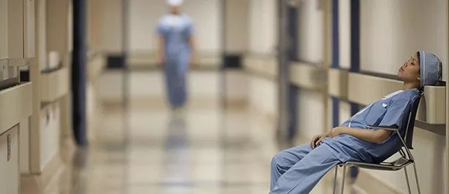
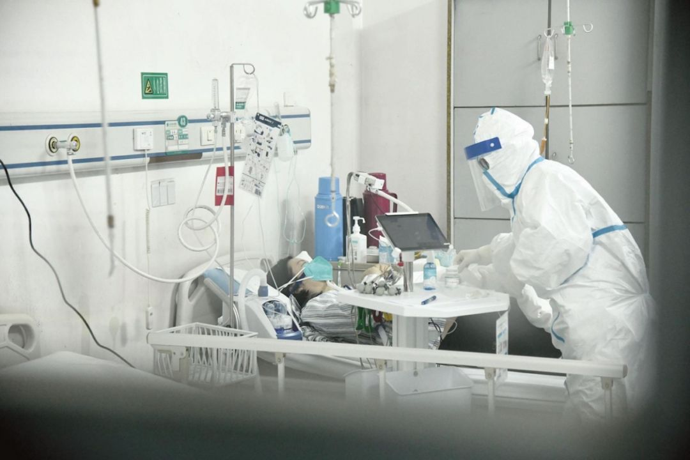
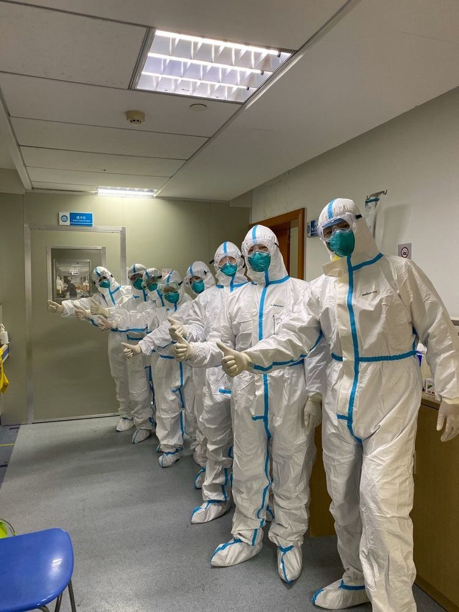
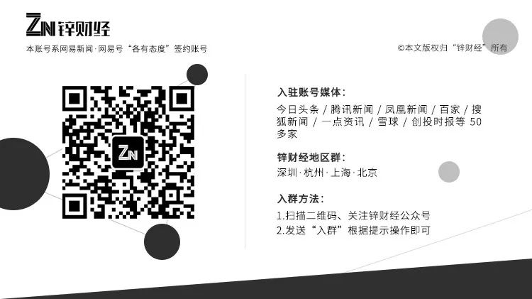

肺炎日记|2月2日：力不从心红会“让路”，双黄连惹质疑
原文链接 备份链接 【财新网】（记者 黄蕙昭 综合）疫情局势仍然严峻。截至2日16时，中国累计确诊病例14489例，死亡304例，疑似病例19544例。湖北地区继续保持高增速：目前，湖北省确诊病例9074例，其中黄冈市累计确诊1002 …


文/杜圆圆
编辑/单一
根据预测，新冠肺炎或将在一周后，迎来新的爆发期。从去年12月初被发现，到目前为止，疫情已经持续了两个月的时间。
从始至终，医护人员一直是最前线的逆行者。武汉这座刚崛起的新一线城市，成了全中国最惨烈的战区。
冲锋号吹响之后，一线的医护人员一直都在超负荷运转，病房爆满，物资紧缺，全国抗击新型冠状病毒肺炎的战斗仍在继续，医护人员都在用各自的方式，维持着这座城市的运转。
有战役，就有受伤。
在战役初期，医护人员甚至在不知情的情况下，感染上了新冠肺炎；即便到了现在，他们依旧是承担风险最大的一批人。
救他与自救在同时进行。
以下是四名被感染新型冠状病毒的医护人员参与“抗疫”的口述，讲述武汉最前线的实况。（经锌财经编辑整理）
“和爱人被隔离长江两头，一切都会慢慢好起来”
讲述人：武汉第七医院 叶医生
于2020年1月30日确诊感染
2003年，一场首发于广东的SARS病毒引发了全球关注，那年，我参加了高考。当时，高考那两天要量体温才能进考场，有些考生身体不舒服，身边有医护和警卫守着。
高考结束后，我填报了武汉大学医学院，如今是武汉市第七医院的一名医生。没有想到，在2020年这场以武汉为圆心的冠状病毒风暴中，我也成了漩涡中心的人。
2020年1月21日，武汉市第七医院被选为定点收治医院，医院随即进行环境整改，腾出所有病床，用以收治新型冠状病毒感染的肺炎确诊和疑似病例。
1月22号晚上10点开诊，来就诊的患者排队已经排到马路上，两个小时的时间，医院的病房就住满了。面对这样的情状，作为一线医护人员，坦白说，内心也有几分紧张的，但是穿上工作服，我们更多的时候是忙碌，忙着和病毒作战，忙着和时间抢人。

医护人员忙着和病毒作战
1月24日，是万家灯火的除夕夜，也是我的不眠夜。
这天是夜班，从下午5点到第二天早上8点半，一晚上接诊将近300名患者，近16个小时马不停蹄的作业，除了面临被感染的高风险，还有很多外人难以想见的困难。
医院的防护物资紧缺，大家身上的防护服在轮班结束前是不能脱下来的，那时候我们还没有经验，穿上防护服后，不吃不喝，憋了16个小时才去洗手间，第一次经历这样的事情，实在憋慌了，第二天我们就穿上尿不湿了。
大年初一的晚上，又是一场从天黑到天亮的战役，这16小时里我又接诊了几百名患者。1月26日，大年初二，正在“备战”的我觉察到身体不适，CT影像呈阳性，我中招了。为了避免成为传染源，向医院申请了隔离，1月30日，核酸测试结果出来，至此确认感染。
我还是选择了回家隔离治疗，每天有很多患者来就诊，我觉得自己的情况还是比较乐观的，不想占用医院床位，选择了回家。
不只是我，我们医院已有十多位医护人员确诊，大家大多选择了在家隔离，建了个小群互相关怀、交流心得。
在这里“病友”里，还有一个我最关心的人——我的爱人。
她也是一名一线医护人员，也一样在工作中被感染，她从1月22号开始隔离治疗，1月30号确诊，已经属于重症了，只能在医院隔离治疗。
22号送她去医院后，我们就一直没见面了。我在武昌区，她在硚口区，中间隔着长江，我过不去，她也回不来，就只能视频里见面。
“没事，坚持治疗，就会好的，等她回家我们就能见上面了。”我心里一直这样鼓励自己。
我们俩最庆幸的，都是在年底被感染的，刚上一年级的女儿一放寒假就被父母接回老家了，目前家里人都很健康。
高强度的工作和被感染的风险，对我们来说，都是本职工作。唯一令我难过的，是频频出现的伤医事件，除夕那天的零点，我请同事帮拍了一张在办公室里拜年的照片，就是希望更多的人能够看到我们这种积极向上的心态，我们虽然在疫区，但是我们并不感到害怕，一切都会好起来的。
我现在的精神状态已经好了很多，酸痛的症状也已经好转。我给自己定了隔离期任务：按诊疗常规用药，保证饮食健康，把体温控制住。
“为了让隔离服穿得久一点，我们用上了尿不湿”
讲述人：武汉某医院外科医生 李昭
于2020年1月26日确诊感染
1月17号上午，我在病房值班，门诊转过来一位腹部不适伴随低热的病人。当时这位患者没有呼吸道的症状，他自己也没测过体温，我们就正常接收了这位病人。
那时候武汉疫情还没有爆发，社会新闻也比较平稳，所以我们普通病房没有做什么防护。直到患者的胸片、胸部CT检查结果出来，我们才发现有问题，很有可能是潜伏期的肺炎患者。
我们赶紧做了隔离防护，暂停手术计划安排，否则更多医护有危险。我应该就是在那次接诊暴露之后感染的，一直潜伏到20多号。我开始觉得身体有些不对劲，就立即上报了科室，采取自我隔离。
我不敢回自己家，正好我父母在武汉的住处空着，我就一个人搬到了老两口的房子里，自我隔离。随后慢慢有了一些症状，先是咳嗽，后来就感到头痛和乏力。
武汉的疫情和舆情大概就是在21、22号这两天爆发的，随着门急诊的肺炎、发热病例数快速增长，医院的物资紧缺，人员也不够。

武汉市汉口医院/图源网络
为了让一件隔离服能穿得久一点，有的医生护士朋友用上了尿不湿，或者不敢吃东西，要么就只吃一点压缩饼干，都是这样过来的。
其实我们一线是最早感觉到危机的，我和同事私底下聊天，觉得这次武汉的形势不太乐观。所以我早早地就在我们同学群里，叫他们在外地的都不要回武汉了。
我们一家原本也准备坐车回湖南老家过年的，但在22号，那位疑似的患者确诊了。不仅我走不了，我也不敢送我家里人走，回去了，担心家里老乡可能有被感染的风险。
所以我们一家决定最后还是留在武汉，分开来过年。我老婆和孩子两人一起过，我自己一个人在我父母家隔离。
除夕晚上，我们就打了个视频电话。那时候，心里挺憋屈的。觉得自己有家不能回，有班不能上，不知道是不是真的感染了。
26号还是确诊了，但说实话，回到医院，住进隔离病房，我心里反而真正踏实了。好好休息和安心治疗后，没准等产生了抗体保护，可以回归岗位去一线更好地支援同事们。
“爱人在前线一直没来看我，免得浪费防护服”
讲述人：武汉汉口医院放射科主任、副主任医师、首批应急战队专家组成员 何嘉安
于2020年1月22日确认感染
我和同事们从1月上旬就开始奋战在武汉市抗击”不明原因肺炎“的前线。从华南海鲜市场不明原因肺炎排查，到我们医院成为武汉三家定点医院之一，医院大厅人满为患，病毒肆虐，一切来得太突然、猛烈。
我所在的CT科室是肺部检查的最前线，大概从1月中下旬开始，我和同事们差不多每天要接诊上百个病人，而其中有近半数都出现了肺部病毒感染的异样。因为当时武汉卫健委定论“有限人传人”，我们医护人员防护还不到位，直到医院检验科、药局等部门相继有医生出现了发热等病症，大家才意识到问题的严重性。
1月21日晚上，我开始发烧、干咳。出于警觉，22号我在自己科室做了CT，拿到CT影像的瞬间，我就知道自己感染了，这些天实在是看了太多相似的病患影像。当时就上报了院办，作为疑似病例采取了隔离措施。

参与新型肺炎救治的医护人员
26日，我的核酸检测结果出来了，阳性，被正式确诊为新型冠状病毒肺炎患者。
进入隔离病房的第一件事，就是给老家的亲戚打电话，我爱人在医院任重症监护室（ICU）主任，也是副主任医师，我病倒了，而她还一直奋战在前线，我们家中还有13岁的女儿无人照顾。
电话里，我托亲戚把孩子带回老家。1月24日，大年三十，这是我们一家三口第一个无法团聚的春节，孩子在老家，我在医院病房内隔离，我爱人在病房外看诊。
我们夫妻虽在同一家医院，但说来隔离这一个星期，她一直没来看我，她说：“免得浪费一件防护服“。
我不怪她，因为医院的防护服实在紧缺，和大家在网络上、新闻上看到的一样，我的好多同事都是尽量控制自己不吃不喝、不上厕所，坚持一天8小时穿着防护服，脱一次就少一件。
汉口医院大概有300多防疫一线医护人员，他们中的大多数投入战斗，就没回过家，累了在医院歇歇脚，要么就住在医院附近的宾馆。
我目前和一位同事住在一起，院里目前确诊感染的医护人员一共5人，其中我是重症，体感上目前还在反复的高烧、咳嗽，上午要打激素，下午能退烧，晚上有时候体温会反弹升高，这个病没有特效药，目前全靠硬抗和一些辅助治疗。
空闲的时候，我就和女儿通话，我们从不谈论病情。我的肺部感染越来越严重了，还不敢告诉女儿和家里老人，看着院办给员工家属的信，我也会默默流泪。
在这场疫情中，也有不少的企业为医护人员提供了相应的保障政策，例如阿里和支付宝，为医护人员设立了“健康保障金”，不幸感染新型冠状肺炎，也会为我们提供多一层的保障。
现在，医院里内外妇儿耳鼻喉口等都进入发热门诊，坐诊的有将要退休的老主任，有刚上岗的年轻医师，有放下手术刀的外科专家，大家没有时间等待转化和适应，却出色完成了任务。
我每天在医院群里、电视上看着大家奋斗的身影，也希望自己能早日康复加入到战斗中。
“对不起爸妈，今年还没和你们吃过一顿饭”
讲述人：武汉市某医院规培医师 李晓晶
于2020年1月25日确认感染
今年1月份以来，感冒发烧咳嗽的病人越来越多，最初我们都以为这和往年一样是流感高发季节，没想到却是一场突如其来、一场猛烈的病毒来袭。一月份我们医院接收了三名新型冠状病毒肺炎疑似病例，由于当时医护人员的防护措施还不到位，而我也在这个过程中不幸感染了。
1月19日晚上回家我开始发高烧，体温39.5，当即在家进行了隔离，1月25日，大年初一，中国人新年的第一天，我的核酸检测结果出来了，被正式确诊感染了新型冠状病毒。
确诊后，我一直没敢告诉家中的父母，怕他们二老担心，谎称要在医院加班，这个春节不能陪伴他们的不只是我，还有我弟弟，他也是一名前线抗击疫情的医疗工作者，并且所在的放射科通常接触潜在感染患者，更加“危险”。
我患病隔离期间，弟弟常常和我视频通话，鼓励我，视频里看着他，作为姐姐很心疼，前两天他持续工作了36个小时，即便是轮班休息，他住在医院附近的酒店也24小时开机，他说：现在病人来看诊的多，自己随时待命，”战友“需要的时候可以随时回去工作。

一线的医护人员
像弟弟这样的医护工作者有很多，我在隔离期间看到好多护士同事24小时不睡，巡视病房，隔离期间家属不能入院探望，病人们的衣食起居都是护士们来照料，住院大楼1到10楼都被征用了，一个医生护士可能就要照料几十号病人，而且是时刻冒着被病毒侵袭的风险，好多同事的手因为反复洗手、涂抹消毒液，要么肿了要么布满红疹划痕。
我确诊感染的消息还是没瞒住，大年初六，老公说漏嘴了，那天我爸和我视频，我看到眼泪在他眼里打转，缓缓地问了我一句后不后悔当医生？
我开玩笑说，别人不当医生也会被感染，有什么好后悔的，这工作带给我成就感，我愿意。
但心里实话讲，我也害怕，父母年迈，我自己的宝宝才五个月大，但救死扶伤是一身白大褂赋予的使命，看到队友们还在辛苦战斗，我也想早日康复，再去战斗，希望病毒驱散，我和弟弟、父母一家人也早日团聚。


原文链接 备份链接 【财新网】（记者 黄蕙昭 综合）疫情局势仍然严峻。截至2日16时，中国累计确诊病例14489例，死亡304例，疑似病例19544例。湖北地区继续保持高增速：目前，湖北省确诊病例9074例，其中黄冈市累计确诊1002 …
原文链接 备份链接 截至1月30日10点03分，中国新型冠状病毒感染肺炎确诊病例突破7000例，达到7736例，疑似病例12167例，死亡170例，治愈出院124例。 据报道，在武汉封城之前，有500万人离开了这座城市。位于武汉西南部、曾 …
原文链接 备份链接 “我在家族群里说，科室工作群里每天都有很多接诊信息，护士长已经连续工作48小时，还有护士生病了。选择当医生、当护士肯定是有风险，但我会做好防护。我返回岗位继续工作不是为了当英雄，但是不能做逃兵。” 全文2771字，阅读 …
原文链接 备份链接 回溯新型冠状病毒在武汉的蔓延过程， “超级传播者”的出现， 几乎是一种必然 1月21日，国家卫健委高级别专家组成员、香港大学微生物学系讲座教授袁国勇提出“超级传播者可能已经出现”，称当时公布的武汉15名被感染医护人员当 …
原文链接 备份链接 根据国家卫健委的通报，截至1月23日零点，共统计到国内新型冠状病毒感染的肺炎确诊病例571例，其中超过400例来自湖北。死亡17例，均来自湖北。此刻的武汉面临以下问题：试剂盒数量不够、确诊艰难、床位短缺、高度疑似患者 …